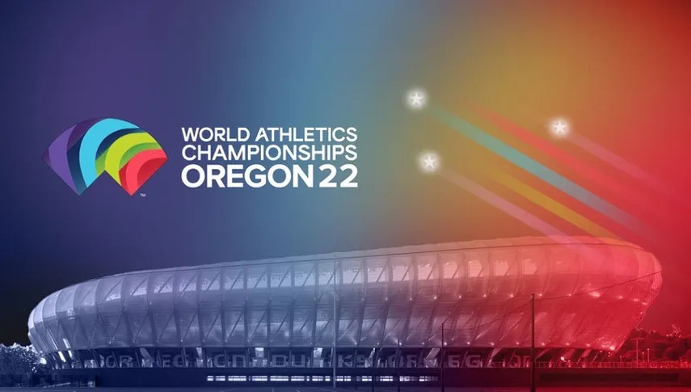

Se acerca el mundial de Oregon!!!
El traslado de los Juegos Olímpicos de Tokio 2020 a 2021 también retrasó un año el Mundial de atletismo
de Eugene. Pero finalmente llegó -y pasó- el momento de que los mejores atletas del planeta se encontraran
para la gran cita que tomó la posta de Doha 2019.
En total hubo 1.972 deportistas que representaron a 192 naciones y federaciones y que compitieron por las
49 medallas de oro que fueron puestas en disputa. A continuación, todo lo que hay que saber de Mundial de
atletismo 2022.
El Mundial de atletismo 2022 se llevara a cabo en el Hayward Field de Eugene, ciudad estadounidense
ubicada en el estado de Oregon. El evento comenzara el viernes 15 de octubre y tendra sus últimas pruebas
el domingo 24 de octubre.

Podra ser visto por los siguientes medios:
En Argentina: TyC Sports.
En Colombia: RTVC.
En Venezuela: Meridiano.
En España: TVE.
En México: Claro.
En Estados Unidos: NBC / NBC Universal
Vetan a atletas rusos de las olimpiadas
Rusia fue suspendida este lunes de competir en cualquier evento deportivo internacional en los próximos
cuatro años, incluidos los Juegos Olímpicos de Tokio, después de que se demostrara que había manipulado
muestras en las pruebas antidopaje de sus atletas.
La decisión fue tomada por la Agencia Mundial Antidopaje (AMA), que concluyó que Moscú había alterado la
información de los laboratorios de control mediante la implantación de evidencias falsas y que había
eliminado los archivos que permitirían dar a conocer los casos de dopaje positivo.
Sin embargo, los atletas rusos que prueben que no recurrieron al dopaje podrán competir bajo una bandera
neutral.
Estamos tan solo a 90 dias de qatar 2022!!!
Qatar 2022 cada vez está más cerca. Tras la confirmación oficial del adelantamiento de la fecha inaugural
al 20 de noviembre (estaba pactado para el 21 de ese mes), solo restan 90 días para que comience a rodar
la pelota en el país asiático. ¿Cuáles son las fechas más importantes que le quedan a la selección
argentina de cara al comienzo del certamen mundialista?
La FIFA confirmó que el Mundial de Qatar comenzará el domingo 20 de noviembre, un día antes de lo
estipulado. El partido inaugural será entre el equipo local y Ecuador, dirigido por el argentino Gustavo
Alfaro, y se disputará en el estadio de Al Bait. Será el único encuentro del día y comenzará a las 19 (las
13 de la Argentina), después de la ceremonia de apertura del torneo.
Francia se prepara para la llegada de los juegos olimpicos de 2024
París toma el relevo de Tokio y se convierte oficialmente en la sede de los Juegos Olímpicos a la espera
de acoger el evento en 2024. Juegos innovadores, acogedores, generosos, ecológicos... Ya nos imaginamos
estando allí. Te mostramos un anticipo de por qué deberías planificar una estancia en París durante las
pruebas y celebraciones.
París se prepara con gran ambición, 100 años después de que se celebraran en Francia los últimos Juegos
Olímpicos de verano. En 2024, la ciudad quiere responder a las nuevas aspiraciones de los ciudadanos y, en
particular, de las generaciones más jóvenes. Y no faltan razones para organizar tu estancia en la capital
francesa. Te contamos estas cinco.

París quiere que los Juegos se celebren en el corazón de la ciudad, en sus monumentos, en lugares que
evocan tanto su historia como su futuro. El deporte saldrá de los estadios y se invitará a sí mismo donde
no se espera: los Campos Elíseos se transformarán en una gigantesca pista de ciclismo, los Campos de Marte
en una pista de vóley-playa, mientras que los Inválidos, el Castillo de Versalles y el Grand Palais
también acogerán competiciones. ¡Imagínate! El Sena como piscina, el triatlón bajo la Torre Eiffel...